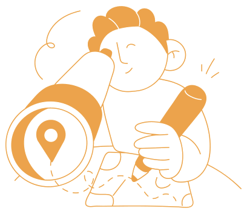
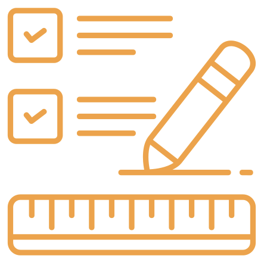

Vous aussi, vous vous interrogez sur votre usage de l'IA ?

J’utilise l’IA dans mon quotidien, mais je n’arrive pas à me rendre compte de ce que je lui demande le plus et quels sont mes usages quotidiens, tu fais comment toi ?
C’est pareil pour moi, je réalise beaucoup de tâches quotidiennes avec l’aide de l’IA, mais je ne saurais pas dire lesquels et si je gagne en autonomie ou pas.

Ce serait super d’avoir un outil avec lequel je peux me rendre compte si je progresse et si j’apprends des choses dans mon travail grâce à mon utilisation de l’IA ou pas du tout…
Le laborIA propose un outil pour dresser son autoportrait de son usage de l’IA dans son travail quotidien ! Je te montre ?
Un parcours en trois étapes
-
1
Lisez la notice
Découvrez le déroulé et les objectifs de l'autodiagnostic.
-
2

Parcourez les trois parties
Analysez vos usages, réfléchissez à ce que l'IA change dans votre travail, puis faites le bilan.
-
3

Faites votre bilan
Répondez aux questions et retrouvez votre récapitulatif. Vos réponses restent dans ce navigateur.
À quoi sert cet outil ?
« J'utilise l'IA dans mon quotidien, mais je n'arrive pas à me rendre compte de ce que je lui demande le plus, ni si je gagne en autonomie. » Cet outil d'autodiagnostic vous aide à faire le bilan de votre usage de l'IA générative dans votre travail au quotidien.
Il s'adresse à des individus (plutôt qu'à des organisations) qui utilisent déjà l'IA, de manière régulière ou non, et se posent des questions sur leur usage : dirigeants, représentants du personnel ou de syndicats, salariés.
- Format : autodiagnostic
- Temps : individuel
- Public : toute personne qui utilise de l'IA générative
- Durée : environ 30 à 45 minutes
Vos résultats restent chez vous
Les résultats de ce bilan sont personnels et ne sont partagés avec personne. Ils sont enregistrés uniquement dans votre navigateur, sur votre ordinateur, et ne sont envoyés nulle part. Vous pouvez les exporter dans la partie 3 pour les conserver.
Que faire de mes résultats ?
Vous pouvez les conserver pour vous, avoir envie d'en discuter avec les représentants du personnel ou des partenaires sociaux de votre entreprise, ou échanger avec d'autres personnes de votre structure. Vous décidez de ce que vous partagez ou non, et à quel degré (tout, en partie, rien). Ce bilan peut aussi alimenter votre participation à une discussion collective, comme celle proposée par l'outil « IA : il faut qu'on parle ».
Vous avez déjà une sauvegarde ?
Si vous avez exporté un précédent autoportrait (par exemple lors d'un bilan annuel) ou que vous changez d'ordinateur ou de navigateur, importez votre fichier de sauvegarde pour retrouver vos réponses. Cela remplace les données actuellement enregistrées dans ce navigateur.
Cet outil a été produit par Simon Chignard et Datactivist dans le cadre de travaux du LaborIA - mai 2026. Contact : laboria@inria.fr